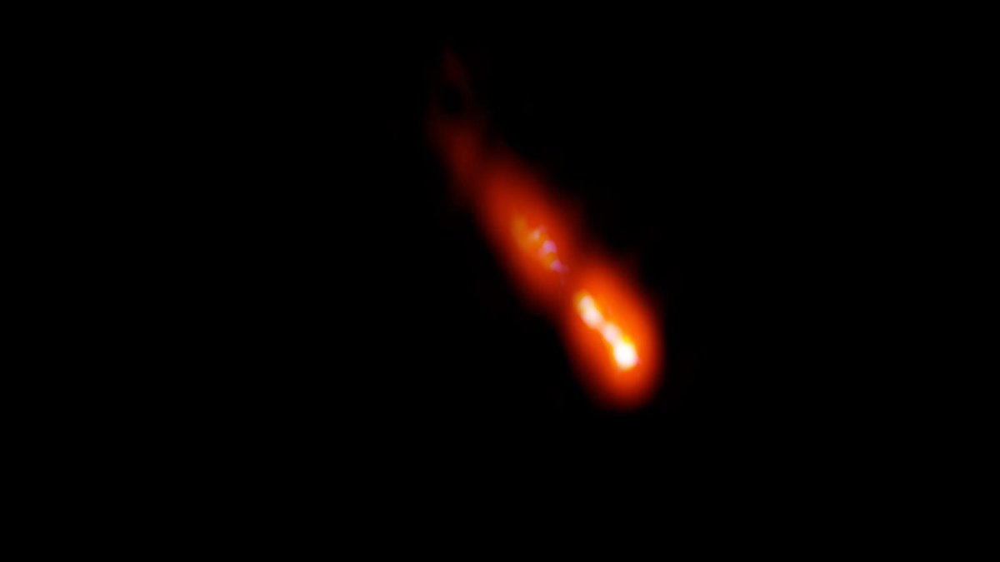
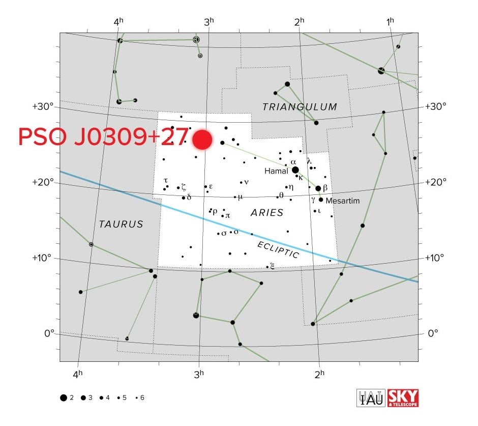

PSO J030947.49+271757.31（简称 PSO J0309+27）是目前已知最遥远的耀变体（blazar），于2020年被发现，是天文学界的重要里程碑。
基本信息坐标：赤经 03h 09m 47.49s，赤纬 +27° 17′ 57.31″（J2000 历元），位于白羊座。
红移：z ≈ 6.10 ± 0.03。
距离：光旅行距离约 128 亿光年（127-128 亿光年），共动距离约 276 亿光年。我们看到的光来自宇宙大爆炸后约 9 亿年 的时期，宇宙当时只有现在年龄的约 7%。
类型：耀变体（blazar），即喷流几乎正对地球的活动星系核（AGN），属于射电噪类星体。
基本信息坐标：赤经 03h 09m 47.49s，赤纬 +27° 17′ 57.31″（J2000 历元），位于白羊座。
红移：z ≈ 6.10 ± 0.03。
距离：光旅行距离约 128 亿光年（127-128 亿光年），共动距离约 276 亿光年。我们看到的光来自宇宙大爆炸后约 9 亿年 的时期，宇宙当时只有现在年龄的约 7%。
类型：耀变体（blazar），即喷流几乎正对地球的活动星系核（AGN），属于射电噪类星体。

